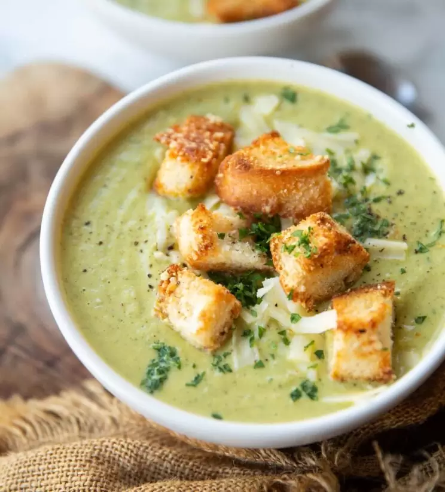

Welcome to Winter
Broccoli Cheddar Soup With Cheesy Croutons
This Broccoli Cheddar Soup is easy, creamy, and a perfect cozy classic. A silky-smooth
base, bites of broccoli and cheesy croutons, and cheddar cheese. It boasts a creaminess that comes from blended
potatoes and broccoli stalks rather than heavy cream or the roux that many recipes call for.

4 SERVINGS
Ingredients
- 2 onions
- 4 garlic cloves
- 3 tbsp unsalted butter
- ½ tsp crushed red pepper flakes, plus more for sprinkling
- 2 heads of broccoli
- 1 medium russet potato
- 8 oz sharp chedder cheese
- 4 thick slices rustic white bread
- ½ cup plain greek yogurt
- 5 cups of water
- kosher salt
- freshly ground black pepper
Preparation
- Halve 2 onions. Peel and coarsely chop. Peel and smash 4 garlic
cloves, then coarsely chop. No need
to break out your best knife skills because it’s all going to get blended, but try to cut everything
into somewhat even pieces so they cook at the same rate.
- Melt 3 tbsp unsalted butter in a large Dutch oven or pot over medium-low heat. Add
onion, garlic,
and ½ tsp red pepper flakes; season with salt and black
pepper (to taste). Stir to combine, then cover pot and
cook, stirring occasionally, until softened and just starting to take on color, 8–10 minutes.
- Meanwhile, trim bottoms of 2 heads of broccoli, then peel. Separate hefty stalks
from florets (the
thin, little stalks attached to broccoli tops are fine to leave attached to the crowns). Set aside
florets. Coarsely chop stalks into 1"–2" pieces. Peel 1 medium russet potato.
Coarsely chop into
1"–2" pieces.
- Add broccoli stalks and potato pieces to pot and stir to coat in butter. Pour in 5 cups
water, add
1 tbsp salt, and bring to a boil over high heat. Reduce heat to medium-low and keep
at a simmer.
Cover pot and cook until broccoli stalks and potatoes are completely tender (test with a cake
tester, paring knife, or fork), 20–25 minutes.
- Meanwhile, chop reserved florets into small pieces (you can take the time to separate them into baby
florets or just have at them with your chef’s knife). Grate 8 oz sharp cheddar
cheese on the large
holes of a box grater. You should have about 2 1/2 cups.
- Add half of florets to pot, cover, and cook until bright green, 3–5 minutes. Transfer to a blender,
let cool for 5 minutes, and purée until smooth. Some blender advice: Don't fill your blender more
than halfway—work in batches as necessary. To avoid explosions, remove the center lid from the
blender and cover with a kitchen towel. Alternatively, use an immersion blender. Your soup won’t be
quite as smooth, but it will still be great. Return purée to pot.
- Return to medium heat and add remaining florets. Cover pot and cook until bright green, another 3–5
minutes. Add 2 cups cheddar cheese and stir until smooth. Cover and reduce heat to
low; set aside
while you make the cheddar croutons.
- Heat broiler. Broil 4 thick slices rustic white bread on a rimmed baking sheet
until lightly browned (watch closely: broilers vary dramatically in power!), 2–3 minutes. Turn bread
over (soft side up), then sprinkle with reserved cheddar cheese and a few flecks of
red pepper flakes. Continue to broil until cheese is bubbling and browned in spots,
2–3 more minutes.
- Remove soup from heat and stir in ½ cup plain Greek yogurt. Season generously with
black pepper; taste for salt
- Cut cheese toasts into 1" (spoon-sized!) pieces. Divide soup among bowls. Top with cheddar croutons or
reserved cheese.